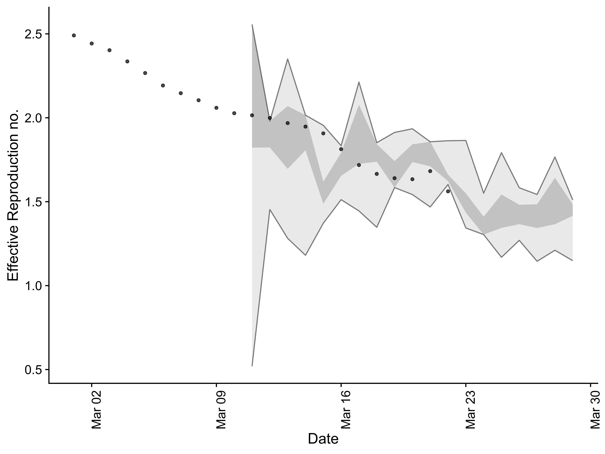

Getting started
introduction.RmdIntroduction
This vignette briefly outlines the functionality of EpiSoon. To get started load the required packages.
- Load the package (
bstsfor models,ggplot2for plotting, andcowplotfor theming)
Forecast Rts, score and plot
- We use an example dataframe built into the package but this could be replaced with your own data.
EpiSoon::example_obs_rts
#> rt date
#> 1 2.490547 2020-03-01
#> 2 2.442588 2020-03-02
#> 3 2.402473 2020-03-03
#> 4 2.335572 2020-03-04
#> 5 2.266551 2020-03-05
#> 6 2.192293 2020-03-06
#> 7 2.146429 2020-03-07
#> 8 2.104371 2020-03-08
#> 9 2.059281 2020-03-09
#> 10 2.027134 2020-03-10
#> 11 2.014678 2020-03-11
#> 12 1.998946 2020-03-12
#> 13 1.968350 2020-03-13
#> 14 1.947376 2020-03-14
#> 15 1.906984 2020-03-15
#> 16 1.812842 2020-03-16
#> 17 1.718532 2020-03-17
#> 18 1.665646 2020-03-18
#> 19 1.639927 2020-03-19
#> 20 1.633795 2020-03-20
#> 21 1.682025 2020-03-21
#> 22 1.561653 2020-03-22- Fit a
bstsmodel and produce a Rt forecast. Any appropriately wrapped model can be used (seebsts_modelandfable_modelfor an examples).
rt_forecast <- forecast_rt(EpiSoon::example_obs_rts[1:10, ],
model = function(...){EpiSoon::bsts_model(model = function(ss, y){bsts::AddAutoAr(ss, y = y, lags = 10)}, ...)},
horizon = 21, samples = 10)
rt_forecast
#> # A tibble: 210 x 4
#> sample date rt horizon
#> <int> <date> <dbl> <int>
#> 1 1 2020-03-11 2.01 1
#> 2 2 2020-03-11 2.00 1
#> 3 3 2020-03-11 1.99 1
#> 4 4 2020-03-11 2.01 1
#> 5 5 2020-03-11 1.97 1
#> 6 6 2020-03-11 1.93 1
#> 7 7 2020-03-11 1.93 1
#> 8 8 2020-03-11 1.94 1
#> 9 9 2020-03-11 1.96 1
#> 10 10 2020-03-11 1.91 1
#> # … with 200 more rows- Score the forecast
rt_scores <- score_forecast(rt_forecast, EpiSoon::example_obs_rts)
rt_scores
#> # A tibble: 12 x 7
#> date horizon dss crps logs bias sharpness
#> <date> <int> <dbl> <dbl> <dbl> <dbl> <dbl>
#> 1 2020-03-11 1 -4.70 0.0298 -1.82 0 0.0471
#> 2 2020-03-12 2 -4.04 0.0364 -1.34 0.100 0.0495
#> 3 2020-03-13 3 -3.48 0.0479 -0.806 0.3 0.157
#> 4 2020-03-14 4 -3.51 0.0575 -0.755 0.3 0.171
#> 5 2020-03-15 5 -3.49 0.0460 -1.07 0.100 0.0857
#> 6 2020-03-16 6 -3.56 0.0284 -1.50 0.4 0.0810
#> 7 2020-03-17 7 -3.32 0.0456 -0.919 0.7 0.102
#> 8 2020-03-18 8 -3.15 0.0499 -0.956 0.8 0.0970
#> 9 2020-03-19 9 -2.91 0.0441 -0.749 0.7 0.191
#> 10 2020-03-20 10 -2.78 0.0543 -0.403 0.4 0.244
#> 11 2020-03-21 11 -2.61 0.0781 -0.215 0.3 0.249
#> 12 2020-03-22 12 -2.35 0.0689 -0.313 0.6 0.232- Summarise the forecast scores
summarise_scores(rt_scores)
#> # A tibble: 5 x 8
#> score bottom lower median mean upper top sd
#> <chr> <dbl> <dbl> <dbl> <dbl> <dbl> <dbl> <dbl>
#> 1 bias 0.0275 0.25 0.35 0.392 0.625 0.772 0.261
#> 2 crps 0.0287 0.0422 0.0469 0.0489 0.0551 0.0756 0.0146
#> 3 dss -4.52 -3.52 -3.40 -3.32 -2.88 -2.42 0.639
#> 4 logs -1.73 -1.13 -0.863 -0.903 -0.663 -0.242 0.480
#> 5 sharpness 0.0478 0.0845 0.130 0.142 0.201 0.248 0.0748- Summarise the forecast
summarised_rt_forecast <- summarise_forecast(rt_forecast)
summarised_rt_forecast
#> # A tibble: 21 x 9
#> date horizon median mean sd bottom lower upper top
#> <date> <int> <dbl> <dbl> <dbl> <dbl> <dbl> <dbl> <dbl>
#> 1 2020-03-11 1 1.97 1.97 0.0362 1.91 1.96 2.01 2.01
#> 2 2020-03-12 2 1.97 1.92 0.0909 1.79 1.97 2.01 2.01
#> 3 2020-03-13 3 1.93 1.87 0.148 1.67 1.89 2.05 2.05
#> 4 2020-03-14 4 1.83 1.85 0.140 1.64 1.80 1.96 2.05
#> 5 2020-03-15 5 1.84 1.82 0.152 1.53 1.78 1.90 2.07
#> 6 2020-03-16 6 1.80 1.77 0.173 1.44 1.79 1.88 2.05
#> 7 2020-03-17 7 1.77 1.75 0.197 1.44 1.69 1.83 2.06
#> 8 2020-03-18 8 1.71 1.71 0.214 1.34 1.67 1.78 2.04
#> 9 2020-03-19 9 1.65 1.68 0.242 1.25 1.64 1.86 2.02
#> 10 2020-03-20 10 1.61 1.66 0.261 1.31 1.31 1.63 2.11
#> # … with 11 more rows- Plot the forecast against observed data

Forecast cases, score and plot
- Forecasting cases requires the observed cases on which the observed Rt estimates were based
EpiSoon::example_obs_cases
#> # A tibble: 63 x 2
#> cases date
#> <dbl> <date>
#> 1 1 2020-01-20
#> 2 0 2020-01-21
#> 3 1 2020-01-22
#> 4 0 2020-01-23
#> 5 0 2020-01-24
#> 6 0 2020-01-25
#> 7 1 2020-01-26
#> 8 0 2020-01-27
#> 9 0 2020-01-28
#> 10 0 2020-01-29
#> # … with 53 more rows- It also requires an assumption to be made about the serial interval (defined using probability distribution).
EpiSoon::example_serial_interval
#> 1 2 3 4 5 6 7 8 9 10 11 12 14
#> 0.00 0.03 0.25 0.17 0.09 0.15 0.13 0.05 0.05 0.03 0.02 0.01 0.01 0.01- Forecast cases (using the case data on which the observed Rt estimates were based)
case_forecast <- forecast_cases(EpiSoon::example_obs_cases, rt_forecast,
serial_interval = EpiSoon::example_serial_interval)
case_forecast
#> # A tibble: 210 x 4
#> sample date cases horizon
#> <dbl> <date> <int> <int>
#> 1 1 2020-03-11 161 1
#> 2 1 2020-03-12 176 2
#> 3 1 2020-03-13 202 3
#> 4 1 2020-03-14 235 4
#> 5 1 2020-03-15 284 5
#> 6 1 2020-03-16 300 6
#> 7 1 2020-03-17 355 7
#> 8 1 2020-03-18 410 8
#> 9 1 2020-03-19 452 9
#> 10 1 2020-03-20 608 10
#> # … with 200 more rows- Score the cases forecast
case_scores <- score_case_forecast(case_forecast, EpiSoon::example_obs_cases)
case_scores
#> # A tibble: 12 x 7
#> date horizon dss crps logs bias sharpness
#> <date> <int> <dbl> <dbl> <dbl> <dbl> <dbl>
#> 1 2020-03-11 1 6.76 8.94 4.03 0.200 14.8
#> 2 2020-03-12 2 8.88 19.9 4.78 0 17.0
#> 3 2020-03-13 3 9.12 20.2 4.75 0 10.4
#> 4 2020-03-14 4 8.91 30.7 5.28 0.100 31.9
#> 5 2020-03-15 5 8.42 30.5 6.16 0.200 14.8
#> 6 2020-03-16 6 7.13 11.2 4.52 0.3 30.4
#> 7 2020-03-17 7 7.38 11.2 4.91 0.5 46.7
#> 8 2020-03-18 8 8.61 30.2 5.60 0.200 52.6
#> 9 2020-03-19 9 9.32 43.0 13.9 0.200 19.3
#> 10 2020-03-20 10 9.75 61.0 6.89 0.200 80.1
#> 11 2020-03-21 11 12.2 144. 7.05 0.100 104.
#> 12 2020-03-22 12 10.2 50.7 6.05 0.8 100.- Summarise the cases scores
summarise_scores(case_scores)
#> # A tibble: 5 x 8
#> score bottom lower median mean upper top sd
#> <chr> <dbl> <dbl> <dbl> <dbl> <dbl> <dbl> <dbl>
#> 1 bias 0 0.100 0.200 0.233 0.225 0.717 0.223
#> 2 crps 9.56 17.7 30.4 38.5 44.9 121. 37.1
#> 3 dss 6.86 8.16 8.90 8.89 9.43 11.7 1.48
#> 4 logs 4.16 4.77 5.44 6.16 6.34 12.0 2.62
#> 5 sharpness 11.6 16.5 31.1 43.5 59.5 103. 33.8- Summarise the cases forecast
summarised_case_forecast <- summarise_case_forecast(case_forecast)
summarised_case_forecast
#> # A tibble: 21 x 9
#> date horizon median mean sd bottom lower upper top
#> <date> <int> <dbl> <dbl> <dbl> <dbl> <dbl> <dbl> <dbl>
#> 1 2020-03-11 1 154. 149. 18.4 118 153 168 169
#> 2 2020-03-12 2 165 165. 16.4 143 146 168 190
#> 3 2020-03-13 3 178. 180. 15.5 156 173 187 203
#> 4 2020-03-14 4 200. 206. 33.1 166 166 208 269
#> 5 2020-03-15 5 226. 234. 32.8 197 215 235 301
#> 6 2020-03-16 6 248 247 29.5 201 244 270 300
#> 7 2020-03-17 7 293 293. 42.2 234 251 301 357
#> 8 2020-03-18 8 296. 301. 58.3 222 234 298 410
#> 9 2020-03-19 9 342 337. 78.5 212 323 349 452
#> 10 2020-03-20 10 374. 382. 108. 261 300 389 608
#> # … with 11 more rows- Plot the forecast against observed case data

Use iterative fitting to explore a forecast
- To explore the quality of a models forecast it can help to iteratively forecast from each available data point. This is supported in
EpiSoonusing the following:
it_rt_forecast <- iterative_rt_forecast(EpiSoon::example_obs_rts,
model = function(...){
EpiSoon::bsts_model(model = function(ss, y){bsts::AddAutoAr(ss, y = y, lags = 10)}, ...)
},
horizon = 7, samples = 10, min_points = 4)
it_rt_forecast
#> # A tibble: 1,260 x 5
#> forecast_date sample date rt horizon
#> <chr> <int> <date> <dbl> <int>
#> 1 2020-03-05 1 2020-03-06 2.15 1
#> 2 2020-03-05 2 2020-03-06 2.22 1
#> 3 2020-03-05 3 2020-03-06 2.05 1
#> 4 2020-03-05 4 2020-03-06 2.08 1
#> 5 2020-03-05 5 2020-03-06 2.48 1
#> 6 2020-03-05 6 2020-03-06 1.81 1
#> 7 2020-03-05 7 2020-03-06 2.30 1
#> 8 2020-03-05 8 2020-03-06 2.03 1
#> 9 2020-03-05 9 2020-03-06 2.24 1
#> 10 2020-03-05 10 2020-03-06 2.03 1
#> # … with 1,250 more rows- We can then iteratively forecast cases using the following:
it_cases_forecast <- iterative_case_forecast(it_fit_samples = it_rt_forecast,
cases = EpiSoon::example_obs_cases,
serial_interval = EpiSoon::example_serial_interval)
it_cases_forecast
#> # A tibble: 1,260 x 5
#> forecast_date sample date cases horizon
#> <chr> <dbl> <date> <int> <int>
#> 1 2020-03-05 1 2020-03-06 72 1
#> 2 2020-03-05 1 2020-03-07 63 2
#> 3 2020-03-05 1 2020-03-08 78 3
#> 4 2020-03-05 1 2020-03-09 111 4
#> 5 2020-03-05 1 2020-03-10 127 5
#> 6 2020-03-05 1 2020-03-11 138 6
#> 7 2020-03-05 1 2020-03-12 179 7
#> 8 2020-03-05 2 2020-03-06 68 1
#> 9 2020-03-05 2 2020-03-07 99 2
#> 10 2020-03-05 2 2020-03-08 78 3
#> # … with 1,250 more rows- All functionality shown above is also supported for iterative forecasting.
Evaluate a model
In real world use we are likely to want to evaluate a model by iteratively forecasting Rts and cases, summarising these forecasts, scoring them and then returning them in a sensible format. These steps are all contained in the evaluate_model function.
model_eval <- evaluate_model(EpiSoon::example_obs_rts,
EpiSoon::example_obs_cases,
model = function(...){
EpiSoon::bsts_model(model = function(ss, y){bsts::AddAutoAr(ss, y = y, lags = 10)}, ...)
},
horizon = 21, samples = 10,
serial_interval = EpiSoon::example_serial_interval)
model_eval
#> $forecast_rts
#> # A tibble: 399 x 10
#> forecast_date date horizon median mean sd bottom lower upper top
#> <chr> <date> <int> <dbl> <dbl> <dbl> <dbl> <dbl> <dbl> <dbl>
#> 1 2020-03-04 2020-03-05 1 2.29 2.25 0.162 1.90 2.24 2.37 2.47
#> 2 2020-03-04 2020-03-06 2 2.21 2.10 0.391 1.13 2.08 2.34 2.49
#> 3 2020-03-04 2020-03-07 3 2.17 1.95 0.623 0.525 1.87 2.23 2.54
#> 4 2020-03-04 2020-03-08 4 2.17 1.84 0.715 0.432 2.17 2.46 2.46
#> 5 2020-03-04 2020-03-09 5 2.05 1.67 0.804 0 2.01 2.20 2.20
#> 6 2020-03-04 2020-03-10 6 1.97 1.55 0.751 0 1.97 2.14 2.14
#> 7 2020-03-04 2020-03-11 7 1.73 1.44 0.677 0 1.71 2.04 2.04
#> 8 2020-03-04 2020-03-12 8 1.53 1.38 0.626 0 1.51 2.05 2.05
#> 9 2020-03-04 2020-03-13 9 1.26 1.28 0.597 0 0.928 1.55 2.03
#> 10 2020-03-04 2020-03-14 10 1.06 1.17 0.601 0 0.656 1.39 1.99
#> # … with 389 more rows
#>
#> $rt_scores
#> # A tibble: 171 x 8
#> forecast_date date horizon dss crps logs bias sharpness
#> <chr> <date> <int> <dbl> <dbl> <dbl> <dbl> <dbl>
#> 1 2020-03-04 2020-03-05 1 -3.74 0.0309 -1.12 0.5 0.0989
#> 2 2020-03-04 2020-03-06 2 -1.92 0.0607 -0.473 0.5 0.195
#> 3 2020-03-04 2020-03-07 3 -0.937 0.0944 -0.233 0.5 0.284
#> 4 2020-03-04 2020-03-08 4 -0.619 0.129 0.0707 0.6 0.315
#> 5 2020-03-04 2020-03-09 5 -0.283 0.122 -0.110 0.5 0.174
#> 6 2020-03-04 2020-03-10 6 -0.233 0.150 0.309 0.3 0.200
#> 7 2020-03-04 2020-03-11 7 -0.0904 0.240 0.541 0.100 0.420
#> 8 2020-03-04 2020-03-12 8 0.0267 0.305 0.693 0.100 0.607
#> 9 2020-03-04 2020-03-13 9 0.344 0.394 0.887 0.100 0.461
#> 10 2020-03-04 2020-03-14 10 0.748 0.473 1.01 0.100 0.541
#> # … with 161 more rows
#>
#> $forecast_cases
#> # A tibble: 171 x 10
#> forecast_date date horizon median mean sd bottom lower upper top
#> <chr> <date> <int> <dbl> <dbl> <dbl> <dbl> <dbl> <dbl> <dbl>
#> 1 2020-03-04 2020-03-05 1 59 58.6 8.33 49 50 59 75
#> 2 2020-03-04 2020-03-06 2 68 64.6 14.4 35 67 82 82
#> 3 2020-03-04 2020-03-07 3 82 71.5 25.9 13 71 90 100
#> 4 2020-03-04 2020-03-08 4 88.5 77.3 33.2 17 70 94 116
#> 5 2020-03-04 2020-03-09 5 101 82.6 39.7 0 99 116 116
#> 6 2020-03-04 2020-03-10 6 118. 93.2 51.6 0 104 126 147
#> 7 2020-03-04 2020-03-11 7 118 97.5 54.7 0 111 157 157
#> 8 2020-03-04 2020-03-12 8 118. 108. 58.1 0 115 179 179
#> 9 2020-03-04 2020-03-13 9 118. 106. 64.2 0 104 187 187
#> 10 2020-03-04 2020-03-14 10 115 113. 78.5 0 80 189 253
#> # … with 161 more rows
#>
#> $case_scores
#> # A tibble: 171 x 9
#> sample forecast_date date horizon dss crps logs bias sharpness
#> <chr> <chr> <date> <int> <dbl> <dbl> <dbl> <dbl> <dbl>
#> 1 1 2020-03-04 2020-03-05 1 4.44 3.44 3.42 0.3 10.4
#> 2 1 2020-03-04 2020-03-06 2 5.61 4.52 3.62 0.3 14.1
#> 3 1 2020-03-04 2020-03-07 3 6.85 6.65 3.86 0.200 14.1
#> 4 1 2020-03-04 2020-03-08 4 7.51 12.2 4.31 0.200 23.7
#> 5 1 2020-03-04 2020-03-09 5 8.04 14.7 4.30 0 18.5
#> 6 1 2020-03-04 2020-03-10 6 8.76 24.3 4.84 0.100 16.3
#> 7 1 2020-03-04 2020-03-11 7 9.69 41.2 5.39 0 46.7
#> 8 1 2020-03-04 2020-03-12 8 10.5 55.5 5.78 0 63.0
#> 9 1 2020-03-04 2020-03-13 9 11.0 67.9 5.97 0 80.8
#> 10 1 2020-03-04 2020-03-14 10 12.1 96.4 6.51 0.100 90.4
#> # … with 161 more rows- All functionality outlined above can be applied to this output but a special plotting function (
plot_forecast_evaluation) is also provided. First evaluate the Rt forecast against observed values.

- Then evaluate forecast cases against observed values.
plot_forecast_evaluation(model_eval$forecast_cases,
EpiSoon::example_obs_cases,
horizon_to_plot = 7)
Wrapper functions
EpiSoon provides several wrapper functions (compare_models and compare_timeseries). These both wrap evaluate_model and can be used to rapidly explore several forecasting models (compare_models) against multiple time series (compare_timeseries). All lower level summary and plotting functions can be then used with the output of these wrappers to explore the results. See the function documentation for further details.